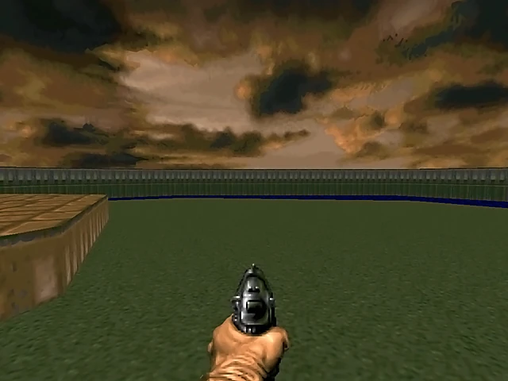
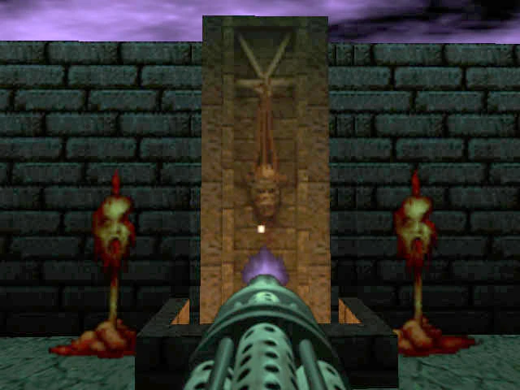

Armas en Doom 64
Descripción de las armas disponibles en Doom 64.
Mapas Principales
- Puños
- Motosierra
- Pistola 
- Escopeta
- Super escopeta
- Ametralladora 
- Fusil de plasma
- Destructor
- BFG 9000
- Llaves del Demonio
Volver al índice
Descripción de las armas disponibles en Doom 64.